Om oss
Godt nytt år 2025!!
Nå er det snart vinterferie. Vi i VINTERLAND hjelper dere med å finne attraktive aktiviteter og destinasjoner i Telemark for deg og familie dine. Telemark er en VINTERPARADIS og det er mange forskjellig aktiviteter dere kan velge.
Dere kan kombinere fantastiske skiopplevelser med andre spenende vinteraktiviteter. På denne nettsiden presenterer vi topp 3 destinasjoner i Telemark for skitur, hytter og inne-aktiviteter.
Vi anbefaler å bruke vår ferie plangelegger skjema for enklere planlegging av vinterferien. Velg mellom de ulike aktiviteter og legg inn i kalenderen din.
Vennligst ta kontakt med oss for mer informasjon og gjerne skriv til oss. Melding kan sendes på epost eller via kontaktskjema nederst på nettsiden. Dere kan også sende deres bilde fra vinterferien som blir oppdatert på våres bildegalleri på denne nettsiden.
Ha en fin vinteropplevelse i Telemark.
Aktiviteter
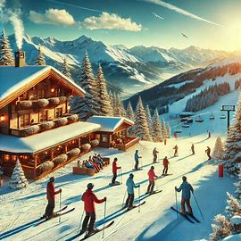
Skitur
Telemark er et av Norges vakreste vinterparadis, og en skitur i dette området byr på spektakulære naturopplevelser. Regionen er kjent for sine variert terreng, fra bratte fjell til rolige daler og store vidder. Her finner du noe for alle, enten du er en erfaren toppturentusiast eller foretrekker en avslappende tur i preparerte løyper.
Telemark regnes ofte som langrennssportens vugge. I Morgedal, kjent som skisportens fødested, kan du besøke museet dedikert til Sondre Norheim, mannen som revolusjonerte ski med sine banebrytende oppfinnelser. Det gir en ekstra dimensjon til skituren å vite at du går i fotsporene til skisportens pionerer.
Klikk her! for å finne 3 topp skitur destinasjoner i Telemark.
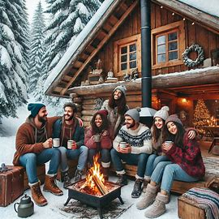
Hyttetur
Telemark er det perfekte stedet for en hyttetur, enten du ønsker å koble av i rolige omgivelser eller fylle dagene med aktiviteter i spektakulær natur. Regionen byr på alt fra sjarmerende tømmerhytter med nostalgisk preg til moderne luksushytter med panoramautsikt over fjell og daler.
En hyttetur i Telemark er en opplevelse som varierer med årstidene. Om vinteren kan du spenne på deg skiene rett utenfor hyttedøren og nyte langrennsløyper eller ta turen til et av de mange alpinanleggene.
Klikk her! for å finne 3 topp hytte destinasjoner i Telemark.
Inneaktiviteter
Når vinterværet blir for røft for utendørsaktiviteter, tilbyr Telemark et mangfold av koselige og spennende inneaktiviteter. Enten du ønsker kulturelle opplevelser, familievennlige aktiviteter, eller bare å slappe av, finnes det noe for alle.
Telemark om vinteren handler ikke bare om ski og friluftsliv- det er også et sted for varme, hygge og unike opplevelser innendørs. Enten du vil lære noe nytt, ha en avslappende dag, eller skape gode minner med familien, finnes det utallige muligheter for å gjøre vinterdagene spesielle.
Klikk her! for å finne 3 topp inneaktivitet destinasjoner i Telemark.
Bilde galleri
-
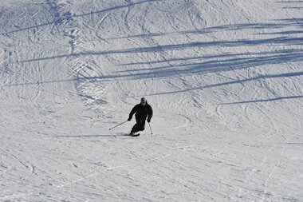
Flugofjell Skisenter Tuddal -
 Gaustatoppen Turisthytte
Gaustatoppen Turisthytte -
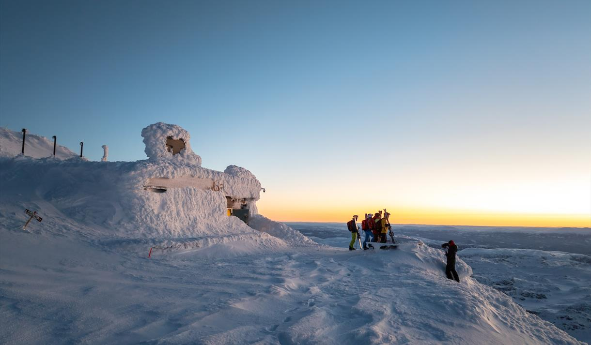
Gaustatoppen -
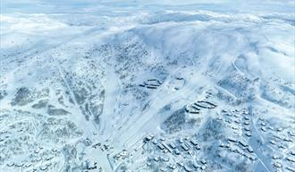
Haukelifjell Skisenter -
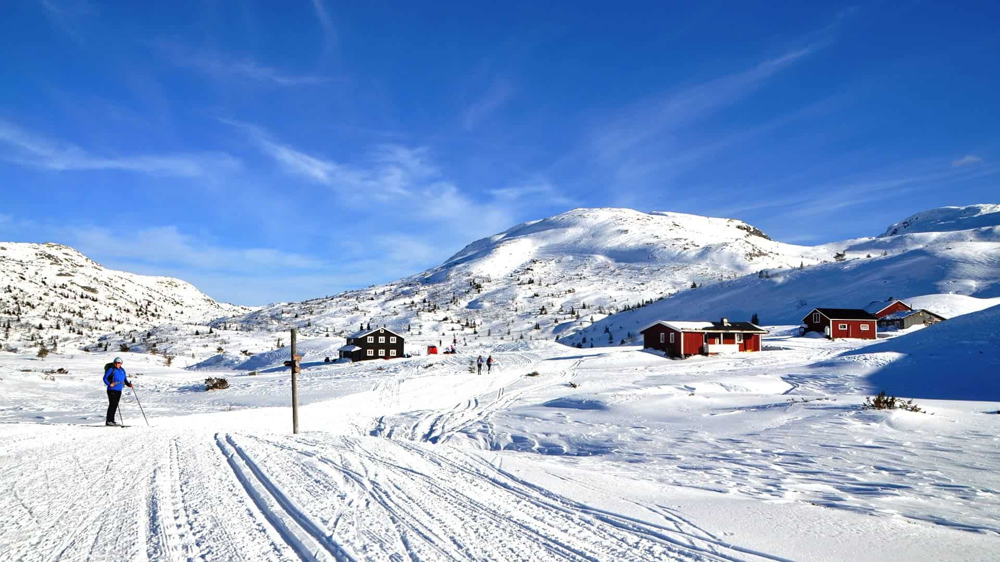
Hollaneseter Lifjell -
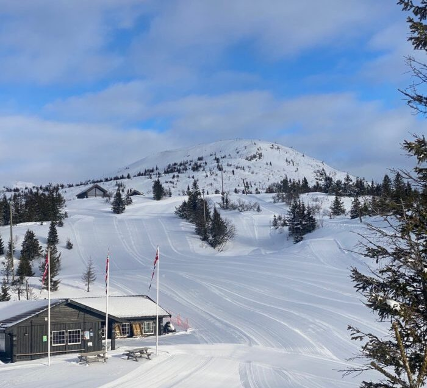
Lifjell Skisenter -
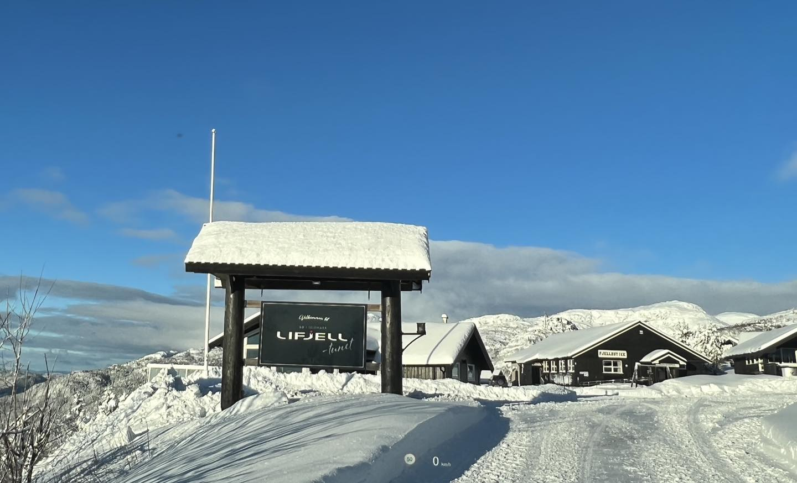
Lifjelltunet -
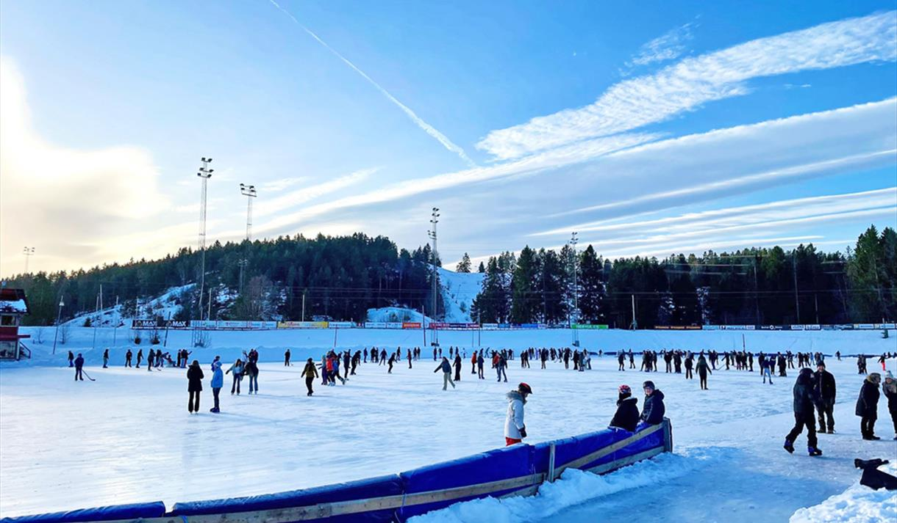
Skøytebanen Skien Fritidspark -
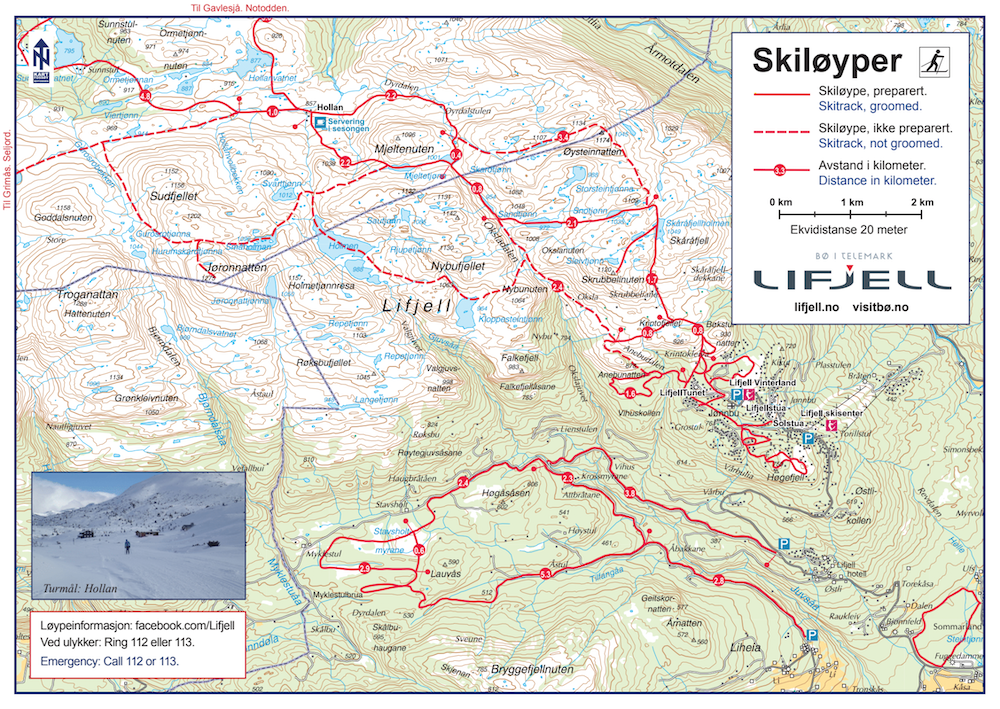
Lifjell løypekart -
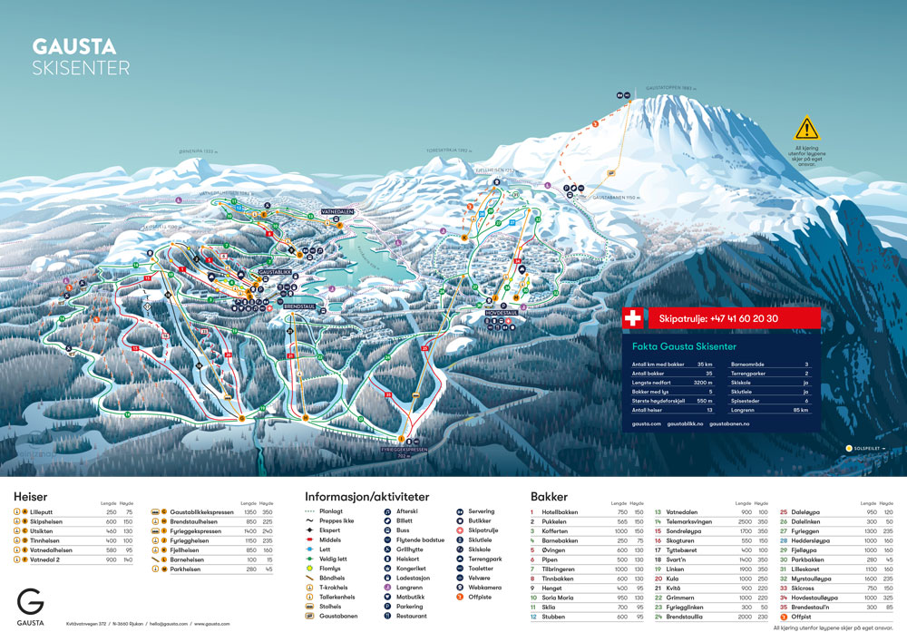
Gaustatoppen løypekart -
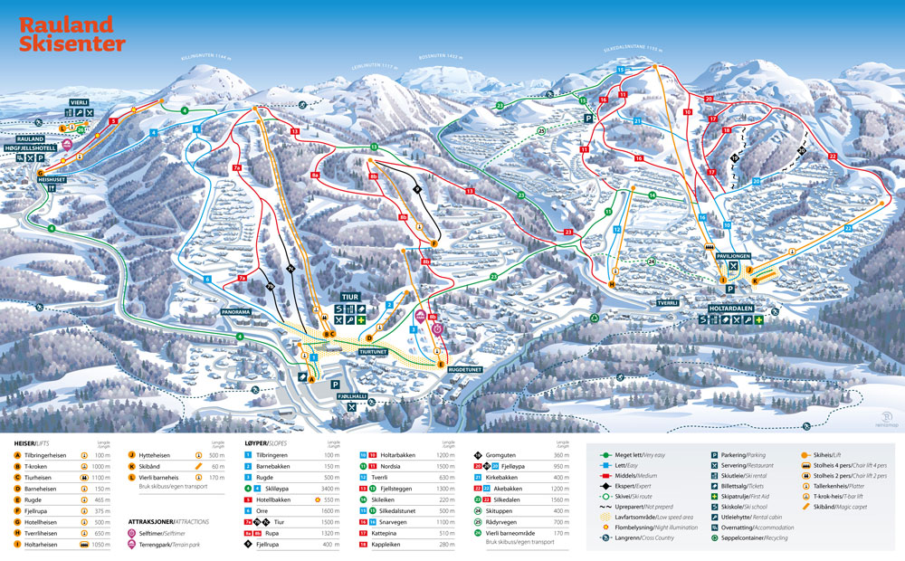
Rauland løypekart